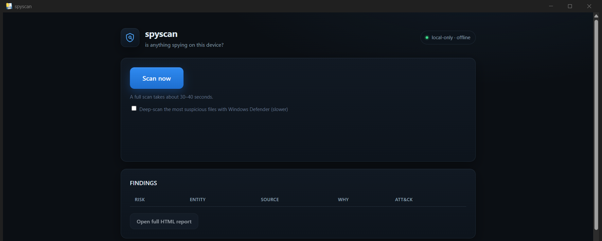

Is anything spying on this device?
Free download · v0.1.0 · unsigned exe (SmartScreen will warn — verify the SHA-256, or run from source)

On a machine you trust, SpyScan snapshots processes, services, drivers, scheduled tasks, autostarts, network connections, and the mic/camera consent store. Every later scan is diffed against that baseline — new or changed persistence is what implants need and what SpyScan surfaces.
Findings are matched against curated mercenary-spyware and stalkerware indicator lists (process names, domains), with MITRE ATT&CK technique references on every finding so you can look up exactly what a signal means.
Decoy files that nothing legitimate should ever touch. If something reads your fake passwords.txt, that behavior alone raises an alert — no signature needed, so it can catch implants no IOC list knows yet.
Everything runs and stays on your machine: no cloud, no account, no upload, no telemetry. The report is a local HTML/JSON file. The optional Windows Defender deep-scan invokes the AV already on your system.
The v0.1.0 exe is not code-signed yet. Check the hash before running it:
PS> Get-FileHash SpyScan.exe -Algorithm SHA256 a10f63d94348c61c1739e7c34db66319887e497a5071477d91e733dad06841f9 SpyScan.exe aa870f170cfba95625a4c727be7e6835cdefa01e96a7dda4a0602025bf3e8f20 SpyScan-v0.1.0-win64.zip
Prefer auditable? Clone the repo, pip install -e ., run spyscan-app (Python 3.13+).
A security tool that oversells its coverage is part of the problem. Read this before trusting a CLEAN verdict:
autorunsc yourself, because its license forbids bundling it. The README documents exactly what goes unchecked (BootExecute, AppInit_DLLs, IFEO hijacks, credential providers, and more).